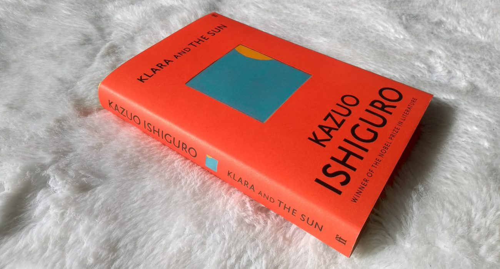
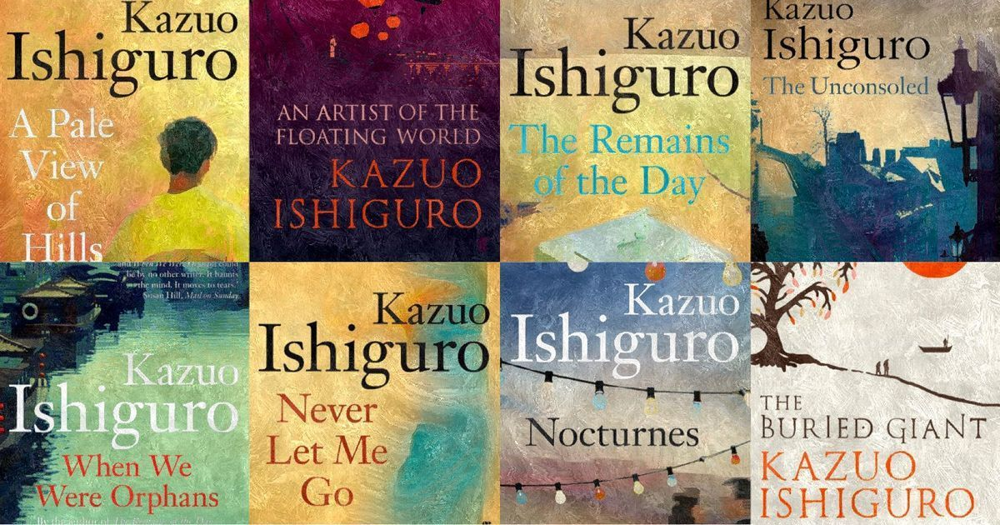

Book of the Year
Klara and the Sun: A novel, is set in a dystopian future in which some children are genetically engineered ("lifted") for enhanced academic ability. As schooling is provided entirely at home by on-screen tutors, opportunities for socialization are limited and parents who can afford it often buy their children androids as companions. The book is narrated by one such Artificial Friend (AF) called Klara. Although Klara is exceptionally intelligent and observant, her knowledge of the world is limited. ...MORE
About the author
KAZUO ISHIGURO was born in Nagasaki, Japan, in 1954 and moved to Britain at the age of five. His eight previous works of fiction have earned him many honors around the world, including the Nobel Prize in Literature and the Booker Prize. His work has been translated into over fifty languages, and The Remains of the Day and Never Let Me Go, both made into acclaimed films, have each sold more than 2 million copies. He was given a knighthood in 2018 for Services to Literature. He also holds the decorations of Chevalier de l'Ordre des Arts et des Lettres from France and the Order of the Rising Sun, Gold and Silver Star from Japan. ...MORE

Read more about Ishiguro
Some of Ishiguro's novels are set in the past. Never Let Me Go has science fiction qualities and a futuristic tone; however, it is set in the 1980s and 1990s, and takes place in a parallel world very similar to ours. His fourth novel, The Unconsoled, takes place in an unnamed Central European city. The Remains of the Day is set in the large country house of an English lord in the period surrounding World War II. ...MORE